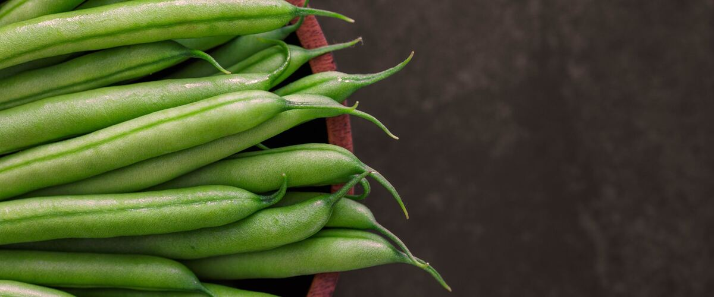

When to plant bush beans in Medford, OR
Plant bush beans from seed, directly in the garden in Medford, May 10 – Jun 21.
- Difficulty
- Easy
- Sun
- Full sun
- Spacing
- 3 inches apart
- Planting depth
- 1 inch deep
- Frost
- Killed by frost
- First harvest
- About 55 days after planting
Why these dates
Medford's typical last spring frost is April 8. Frost kills bush beans, and warm-season crops also need warm soil. Soil here stays cold for weeks after the last frost, so planting waits until about May 10.
West-side valleys. The Willamette Valley, Puget Sound and southern Oregon valleys. Long frost-free seasons, but soil stays cold and wet into May, so warm crops wait for warm soil, not just the last frost.
How to grow bush beans in Medford
- Prepare the bed: loosen the soil and mix in an inch or two of compost.
- Plant seeds May 10 – Jun 21, 1 inch deep, 3 inches apart.
- Keep the soil evenly moist until sprouts appear, which can take one to three weeks in cool soil.
- Harvest: Pick when pods are pencil-thick and before the seeds bulge. Picking often keeps plants producing.
Key numbers
- 60°F min, 80°F idealSoil to sprout
- NoSoak seeds?
- Makes its ownNitrogen
- Above 90°F or dryFlowers drop
- 6.0–7.0Soil pH
- Pencil-thickPick at
How it works
The plant biology behind the advice above, in plain language.
Why cold soil kills bean seeds
Bean seeds need soil of at least 60°F to sprout, and about 80°F is ideal. In cold, wet soil, dry seeds absorb water so quickly that their tissues are damaged, and soil fungi then rot them before they emerge. That's the most common bean failure in the Northwest. Use a soil thermometer and wait for 60°F. Don't soak bean seeds before planting, since that can cause the same injury. Provider is noted for sprouting better in cooler soil.
Beans make their own nitrogen
Beans partner with soil bacteria called rhizobia, which live in small nodules on the roots and turn nitrogen from the air into a form the plant can use. Active nodules are pink inside. Because of this, beans need little nitrogen fertilizer, and heavy feeding mostly produces leaves at the expense of pods.
In a bed that hasn't grown beans before, coating seeds with a bean inoculant (a powder containing the right bacteria) at planting time helps nodules form.
Soil and water
Beans grow best in loose, well-drained soil with a pH of about 6.0 to 7.0. Keep the soil evenly moist once flowering starts. Drought or heat above about 90°F during bloom causes flowers and small pods to drop, which is more common east of the Cascades.
Disease
Bacterial blights and white mold spread easily on wet leaves. Water at the base, give plants room for airflow, and avoid working among them or picking while the leaves are wet, since you can carry bacteria from plant to plant on your hands.
Harvest and storage
Pick snap beans when pods are about as thick as a pencil and before seeds bulge. Once seeds start to mature, the plant slows down, so frequent picking keeps it producing for weeks. Store in the fridge and use within about a week.
Common questions
When is the last frost in Medford, OR?
Typically April 8. In 9 years out of 10, frost is over by April 30. These are 1991–2020 NOAA climate normals for Medford Rogue Valley Airport.
Is it too late to plant bush beans in Medford?
The spring planting window runs through June 21. Later plantings may not have time to produce before the first fall frost, which usually arrives around October 29.
How long until I can harvest bush beans?
About 55 days after planting. Pick when pods are pencil-thick and before the seeds bulge. Picking often keeps plants producing.
Should I soak bean seeds before planting?
No. Bean seeds that take up water too fast, especially in cold soil, can be damaged and rot. Plant dry seed in moist soil that's at least 60°F, and water once.
Do beans need fertilizer?
Very little. Beans work with soil bacteria that supply nitrogen from the air, so too much nitrogen just produces leaves. Mix in compost and use an inoculant in beds that haven't grown beans before.
Why are my bean flowers falling off?
Usually heat or drought while flowering, especially with days above about 90°F. Keep the soil evenly moist through bloom, and new flowers will set pods once temperatures ease.
Also plant in Medford around the same time
 Carrots
Carrots Beets
Beets Swiss chard
Swiss chard Sweet corn
Sweet corn Cucumbers
Cucumbers Zucchini and summer squash
Zucchini and summer squash Winter squash and pumpkins
Winter squash and pumpkins Tomatoes
Tomatoes
Planting dates for bush beans in nearby areas
- Roseburg, OR May 10 – Jun 21
- Grants Pass, OR May 10 – Jun 21
- Ashland and Talent, OR May 13 – Jun 24
- Portland, OR May 10 – Jun 21
- Gresham, OR May 10 – Jun 21
- Wilsonville and Canby, OR May 10 – Jun 21
Full planting calendar for Medford · Bush beans in every city